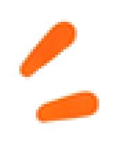
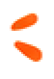

仅裁切去底，主体不透明 RGB 与源图逐像素一致；原尺寸母版未放大。4 倍版本只供检查边缘。星形原稿自带白描边；时钟、夹板、完成圆标的白色内芯保留。
Source: design/concepts/mobile-board-frontdesk-v2.png / crop [45, 309, 155, 420] / master [110, 111] / visible [91, 92]
Source: design/concepts/mobile-board-frontdesk-v2.png / crop [487, 306, 597, 410] / master [110, 104] / visible [99, 93]
Source: design/concepts/mobile-board-frontdesk-v2.png / crop [50, 479, 130, 571] / master [80, 92] / visible [66, 80]
Source: design/concepts/mobile-board-frontdesk-v2.png / crop [355, 421, 497, 504] / master [142, 83] / visible [114, 62]
Source: design/concepts/rush-frontdesk-states-v2.png / crop [64, 656, 161, 803] / master [97, 147] / visible [83, 134]
Source: design/concepts/rush-frontdesk-states-v2.png / crop [888, 717, 974, 813] / master [86, 96] / visible [67, 80]
Source: design/concepts/shift-finish-storyboard-v2.png / crop [799, 375, 1069, 578] / master [270, 203] / visible [256, 187]
Source: design/concepts/mobile-board-frontdesk-v2.png / crop [538, 490, 613, 565] / master [75, 75] / visible [58, 59]
Source: design/concepts/mobile-board-frontdesk-v2.png / crop [372, 505, 410, 554] / master [38, 49] / visible [27, 36]
Source: design/concepts/mobile-board-frontdesk-v2.png / crop [405, 349, 446, 403] / master [41, 54] / visible [29, 38]

Source: design/concepts/shift-finish-storyboard-v2.png / crop [794, 704, 826, 745] / master [32, 41] / visible [20, 27]
Source: design/concepts/shift-finish-storyboard-v2.png / crop [1026, 704, 1054, 745] / master [28, 41] / visible [17, 26]
